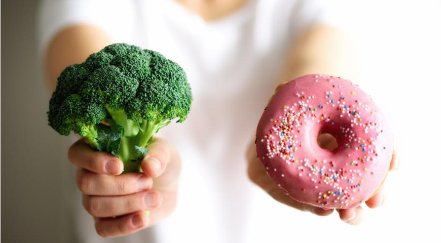

Все больше современных людей предпочитает вести здоровый образ жизни: в частности, правильно питаться, соблюдать диету, заниматься спортом. Однако в стремительном ритме дней именно вопрос полноценного и правильного питания становится не самым простым для реализации. Это объясняется тем, что человек часто не хочет тратить время на приготовление пищи, предпочитая полуфабрикаты и консервы; заедает чувство голода фастфудом, жирной и сладкой едой; не внимателен к выбору продуктов и не задумывается над тем, какая еда полезна, а какая – нет. Кроме того, не всем удается ежедневно пить не менее 1,5-2 литров чистой воды, что помогает нормальному обмену веществ и очищению организма от токсинов.
Безусловно, изменение привычной культуры питания и режима становятся определенным барьером, который надо преодолеть. Но это всегда дает положительный результат, связанный с оздоровлением организма, улучшением самочувствия, снижением веса. Есть и еще один аргумент – вкусная здоровая еда дарит ощущение радости жизни.
Принципы здорового питания
Формула правильного, здорового питания достаточно проста, так как включает всего лишь две составляющие, находящиеся в прямой зависимости друг от друга. Суть ее такова: энергетическая ценность пищи должна соответствовать затратам энергии организмом. Всем известно, если человек много ест, но мало двигается, его нерастраченная энергия превращается в лишний вес. Значит, в поддержании нормального веса имеет значение образ жизни, род занятий, пол, физиологические данные, физическая активность. Но каждый человек может придерживаться простых правил.
Итак, правильное, то есть сбалансированное или рациональное, питание требует:
- Cоблюдать режим, есть всегда в одно и то же время.
- Придерживаться графика питания: завтрак, легкий перекус, обед, полдник, ужин. При этом основной объем пищи должен поступать в организм во время завтрака и обеда.
- Делать перерыв между приемами пищи не более 3 часов.
- Учитывать энергетическую ценность продуктов и верно распределять их в графике питания.
- Рассчитывать объем порции еды, соблюдая «правило тарелки»: 1/4 – сложные углеводы, 1/4 – белки, 1/2 – овощи, фрукты, ягоды.
- Сочетать жиры, белки и углеводы согласно личной физической активности, не забывать про витамины, микроэлементы, клетчатку.
- Отдавать предпочтение овощам и фруктам, рыбе, птице, нежирному мясу, морепродуктам, обезжиренным молочным продуктам, бобовым, цельным злакам, крупам.
- Сократить употребление соли, сахара, сладостей и выпечки (быстрые углеводы), газированных напитков, фабричных соков, алкоголя.
- Придерживаться здоровых методов приготовления блюд: на пару, тушение, варка.
- Принимать пищу только во время появления чувства голода; не употреблять слишком холодную и слишком горячую еду; тщательно пережевывать.
- Спать не менее 7 часов в день, избегать стрессов.
Как правильно перейти на здоровое питание?
Для поддержания нормального веса, комфортного самочувствия и общего благополучия организма стоит продумывать меню на каждый день, которое обычно называют легкой диетой на каждый день. Сбалансированная диета должна составляться индивидуально, на одни сутки или на неделю. Ее цель – пищевой баланс, то есть соотношение белков, жиров, углеводов, близкое к 1 – 1 – 4, что помогает организму полностью переваривать пищу и таким образом обогащаться необходимыми веществами. Так, белок дает сытость, жиры и углеводы – энергию. Нельзя забывать и о том, что диета и физическая активность, оптимальная для возраста и состояния здоровья, приносят двойную пользу.
Правила составления рациона
Сегодня проблема лишнего веса и, следовательно, похудения – одна из самых актуальных. Переедание, любовь к вредным продуктам, сидячий образ жизни, стресс могут стать причиной появления лишних килограммов. Бывает, что борьба с ними длится годами. При этом не помогают ни голодание, ни строгие диеты. Однако стоит вспомнить о расчете калорий и о том, что вес начнет снижаться, когда дефицит калорий достигнет 20%. Поэтому можно попробовать изменить свой взгляд на питание и соблюдать простую диету, которая эффективно работает и не наносит вреда организму, но позволяет значительно улучшить фигуру и самочувствие.
Такая диета исключает прежде всего жирное, мучное и сладкое, но состоит не только из кефира и яблок, но из вкусных и полезных блюд. Кроме того, она включает правильное употребление чистой воды: по 1 стакану за 20-30 минут до завтрака и между приемами пищи. Есть и еще несколько нюансов. Так, лучше не использовать «быстрые» каши, а готовить или запаривать их вечером. Стоит научиться «обманывать» свой организм с помощью интересных кулинарных трюков: особенно когда хочется продуктов, которые исключены из питания, например, сладостей. И пора попробовать новые полезные крупы, такие как булгур, кускус и киноа.
От каких продуктов нужно отказаться?
Чтобы питание было здоровым и правильным, следует максимально сократить, а лучше исключить продукты с высокой степенью обработки и высококалорийную пищу. Высокообработанными считаются продукты, которые технологически перерабатываются с целью улучшения внешнего вида, вкусовых качеств, ускорения процесса приготовления или увеличения срока годности.
Конечно, высокообработанные продукты очень удобны — нет нужды тратить время на приготовление пищи. Однако такая еда во многом утрачивает свою пищевую ценность, а полезные вещества в её составе (витамины, минералы, клетчатка) разрушаются. Как правило, такие продукты содержат большое количество простых углеводов, насыщенных жиров и соли.
В состав здорового питания не должны входить трансжиры, когда жидкие растительные масла искусственно переводят в твёрдую, имитирующую сливочное масло, формe. Это чужеродные для организма вещества.
К продуктам, от которых следует откакзаться, относятся:
- фастфуд;
- чипсы и сухарики;
- колбаса, сосиски, карбонады, мясные полуфабрикаты;
- кондитерские изделия;
- выпечка;
- маргарин и спреды;
- газировка, пакетированные соки;
- маринады и соленья.
Меню на каждый день

Меню включает в себя:
- молочные продукты;
- семечки и орехи;
- фрукты и овощи;
- крупы;
- рыбу и морепродукты;
- смузи, коктейли;
- яйца;
- мясо птицы, говядину;
- цельнозерновой хлеб.
Как сильно можно похудеть на правильном питании?
Главная цель похудения — не быстро сбросить вес, а удержать эффект от правильного питания не менее 3 лет. Резкие колебания веса, наоборот, приводят к обменным нарушениям в организме, и в дальнейшем похудеть будет всё труднее и труднее. Оптимальное снижение веса не должно превышать 0,5-1 кг в неделю. Это позволяет в среднем за 3-12 месяцев здорового питания снизить массу тела на 8%